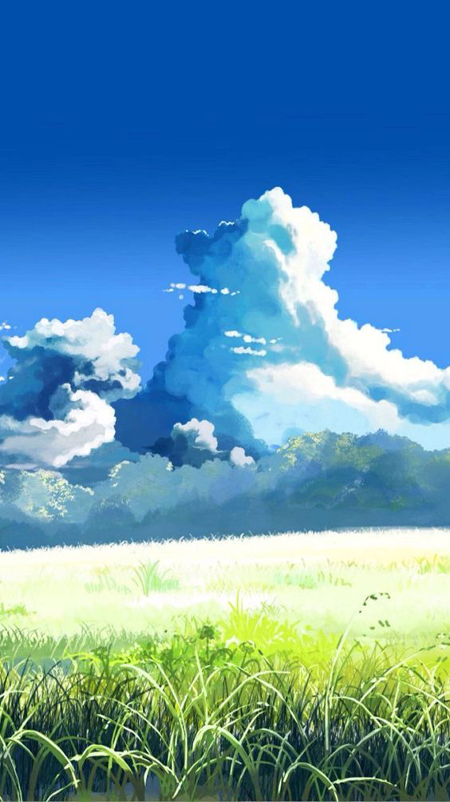

Let the day unfold.
A calm reading surface, a generous serif heading, and one small moment of green. Keep the visual rhythm unhurried.
Read the design principles ↗Clouds that rise like mountains. Grass that follows the breeze. A visual language built around light, distance, and room to breathe.
Explore the styleAn interface interpretation of the supplied illustration.

Visually estimated colors from the image. Deep blue anchors the scene; luminous greens and cloud-white carry the light.
#0753aa#52a3ed#f5fcf3#75c4da#d9f58b#91bd45#183e42The image has no interface or type. These components are proposed adaptations of its atmosphere.
A calm reading surface, a generous serif heading, and one small moment of green. Keep the visual rhythm unhurried.
Read the design principles ↗Deep-blue actions, clear focus rings, and solid reading surfaces. Hover or tab through the controls to inspect their states.
These demonstrate appearance and interaction states; nothing is submitted or saved.
Observed: image, composition, light, and depth.
Estimated: palette.
Proposed: all typography, layout, components, and motion.